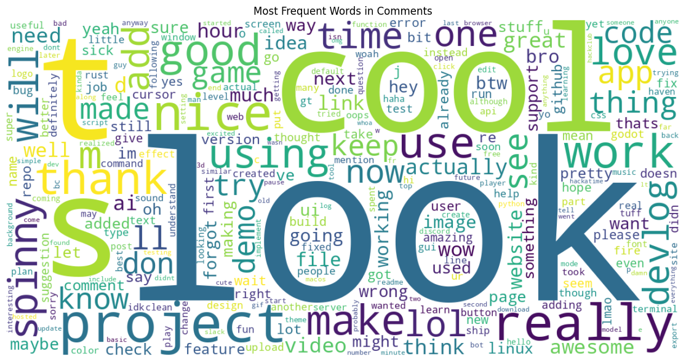

Look at the spaghetti code
import sys
import subprocess
subprocess.check_call([
sys.executable, "-m", "pip", "install", "--upgrade",
"pandas",
"plotly",
"wordcloud",
"matplotlib",
"numpy",
"kaleido",
"pyarrow"
])This notebook runs a bunch of data analysis on the comments and saves the analysis to data/processed/comments.
import pandas as pd
import plotly.express as px
import plotly.graph_objects as go
from plotly.subplots import make_subplots
from wordcloud import WordCloud
import matplotlib.pyplot as plt
import re
import numpy as np
import matplotlib.pyplot as plt
from pathlib import Path
import json
import plotly.io as pio
df = pd.read_parquet('../data/comments.parquet')
index = {
"numerical":{},
"top":{},
"graphs":{},
}Dataset shape: (1323, 5)
Columns: ['text', 'devlog_id', 'slack_id', 'created_at', 'scraped_at']
Data types:
text object
devlog_id int64
slack_id object
created_at datetime64[ns, UTC]
scraped_at datetime64[ns, UTC]
dtype: object
First few rows:| text | devlog_id | slack_id | created_at | scraped_at | |
|---|---|---|---|---|---|
| 0 | woow, pretty awesome project! i love it! | 7 | U06MC0G7A4R | 2025-06-16 05:37:49.240000+00:00 | 2025-08-15 04:09:34.853000+00:00 |
| 1 | ngl, this looks really cool! | 41 | U05F4B48GBF | 2025-06-16 17:38:34.630000+00:00 | 2025-08-15 04:09:34.853000+00:00 |
| 2 | Love the design, amazing work | 48 | U079W50D0Q2 | 2025-06-16 18:09:06.660000+00:00 | 2025-08-15 04:09:34.853000+00:00 |
| 3 | This is the exact project I am working on haha... | 55 | U08FAMN2MAP | 2025-06-16 18:39:42.904000+00:00 | 2025-08-15 04:09:34.853000+00:00 |
| 4 | is it, I would love to compete..feel free to d... | 55 | U091PSK9RB6 | 2025-06-16 18:45:18.801000+00:00 | 2025-08-15 04:09:34.853000+00:00 |
EXPORT_DIR = Path('../data/processed/comments').resolve()
EXPORT_DIR.mkdir(parents=True, exist_ok=True)
DEFAULT_WIDTH = 1100
DEFAULT_HEIGHT = 420
som_wide = go.layout.Template(layout=dict(
width=DEFAULT_WIDTH,
margin=dict(l=60, r=30, t=60, b=50),
))
pio.templates['som_wide'] = som_wide
pio.templates.default = 'plotly_white+som_wide'
try:
pio.renderers.default = 'vscode'
except Exception:
pass
def register_graph(key: str,name:str, description: str, image_file: str):
index['graphs'][key] = {
'name': name,
'description': description,
'image_file': Path(image_file).name
}
def save_plotly(fig, name: str, description: str, scale: int = 2, width=None, height=None, friendly_name: str = ""):
filename = f"{name}.png"
out_path = EXPORT_DIR / filename
try:
exp_width = width if width is not None else (fig.layout.width or DEFAULT_WIDTH)
exp_height = height if height is not None else (fig.layout.height or DEFAULT_HEIGHT)
fig.write_image(str(out_path), scale=scale, width=exp_width,
height=exp_height)
register_graph(name,friendly_name, description, filename)
except Exception as e:
print(f'Failed to save Plotly figure {name}: {e}')
def save_matplotlib_current(name: str, description: str, dpi: int = 150, friendly_name: str = ""):
filename = f"{name}.png"
out_path = EXPORT_DIR / filename
try:
plt.gcf().savefig(out_path, bbox_inches='tight', dpi=dpi, facecolor='white')
register_graph(name, friendly_name, description, filename)
except Exception as e:
print(f'Failed to save Matplotlib figure {name}: {e}')
def save_to_index(key: str,name:str,description:str, data, type="numerical"):
if isinstance(data, pd.DataFrame):
records = data.to_dict(orient='records')
indexed = {i: rec for i, rec in enumerate(records)}
index[type][key] = {
'name': name,
'description': description,
'data': indexed,
}
else:
index[type][key] = {
'name': name,
'description': description,
'data': data
}Shows some numerical data
Count the total number of comments in the dataset.
Total number of comments: 1,367Count how many unique devlogs have comments.
unique_devlogs = df['devlog_id'].nunique()
print(f"Number of unique devlogs with comments: {unique_devlogs:,}")
save_to_index('unique_devlogs_with_comments', name='Unique devlogs with comments', description='The number of unique devlogs that have comments.', data=int(unique_devlogs), type='numerical')Number of unique devlogs with comments: 988Count how many unique users have made comments.
Number of unique users who commented: 559Calculate the average number of comments per devlog.
avg_comments_per_devlog = total_comments / unique_devlogs
print(f"Average comments per devlog: {avg_comments_per_devlog:.2f}")
save_to_index('avg_comments_per_devlog', name='Average comments per devlog', description='The average number of comments per devlog.', data=float(avg_comments_per_devlog), type='numerical')Average comments per devlog: 1.38Calculate the average length of comments in characters.
df['text_length'] = df['text'].fillna('').astype(str).str.len()
avg_comment_length = df['text_length'].mean()
print(f"Average comment length: {avg_comment_length:.1f} characters")
save_to_index('avg_comment_length', name='Average comment length', description='The average length of comments in characters.', data=float(avg_comment_length), type='numerical')Average comment length: 67.6 charactersShows the top stuff
Show the top 5 devlogs with the most comments.
top_devlogs = (df.groupby('devlog_id')
.agg({'text': 'count', 'created_at': 'min'})
.rename(columns={'text': 'comment_count'})
.sort_values('comment_count', ascending=False)
.head(5)
.reset_index())
top_devlogs['devlog_link'] = top_devlogs['devlog_id'].apply(
lambda x: f"https://summer.hackclub.com/devlogs/{x}")
print("Top 5 devlogs by comment count:")
save_to_index('top_devlogs_by_comments', name='Top 5 devlogs by comment count',
description='The top 5 devlogs with the most comments.', data=top_devlogs, type='top')
top_devlogsTop 5 devlogs by comment count:| devlog_id | comment_count | created_at | devlog_link | |
|---|---|---|---|---|
| 0 | 35559 | 11 | 2025-08-13 18:12:47.438000+00:00 | https://summer.hackclub.com/devlogs/35559 |
| 1 | 563 | 8 | 2025-06-19 21:36:15.991000+00:00 | https://summer.hackclub.com/devlogs/563 |
| 2 | 31905 | 7 | 2025-08-08 00:07:50.947000+00:00 | https://summer.hackclub.com/devlogs/31905 |
| 3 | 35671 | 7 | 2025-08-13 21:59:28.874000+00:00 | https://summer.hackclub.com/devlogs/35671 |
| 4 | 5868 | 5 | 2025-06-24 15:00:03.133000+00:00 | https://summer.hackclub.com/devlogs/5868 |
Show the top 5 users who have made the most comments.
top_users = (df.groupby('slack_id')
.agg({'text': 'count', 'created_at': 'min'})
.rename(columns={'text': 'comment_count'})
.sort_values('comment_count', ascending=False)
.head(5)
.reset_index())
top_users['user_profile'] = top_users['slack_id'].apply(
lambda x: f"Slack ID: {x}")
print("Top 5 users by comment count:")
save_to_index('top_users_by_comments', name='Top 5 users by comment count',
description='The top 5 users who have made the most comments.', data=top_users, type='top')
top_usersTop 5 users by comment count:| slack_id | comment_count | created_at | user_profile | |
|---|---|---|---|---|
| 0 | U07E8H9A24A | 36 | 2025-06-25 16:42:23.507000+00:00 | Slack ID: U07E8H9A24A |
| 1 | U0925Q3PB0Q | 30 | 2025-07-31 08:45:16.240000+00:00 | Slack ID: U0925Q3PB0Q |
| 2 | U09A3GV54QL | 30 | 2025-08-12 19:30:48.410000+00:00 | Slack ID: U09A3GV54QL |
| 3 | U091KJSPK6X | 25 | 2025-06-18 13:44:27.637000+00:00 | Slack ID: U091KJSPK6X |
| 4 | U080V8UG5BR | 21 | 2025-07-31 14:20:15.173000+00:00 | Slack ID: U080V8UG5BR |
Show the top 5 longest comments by character count.
longest_comments = (df.nlargest(5, 'text_length')[['devlog_id', 'slack_id', 'text_length', 'text', 'created_at']]
.copy())
longest_comments['text_preview'] = longest_comments['text'].astype(str).str.slice(0, 100) + '...'
longest_comments['devlog_link'] = longest_comments['devlog_id'].apply(
lambda x: f"https://summer.hackclub.com/devlogs/{x}")
print("Top 5 longest comments:")
save_to_index('longest_comments', name='Top 5 longest comments',
description='The top 5 longest comments by character count.', data=longest_comments, type='top')
longest_comments[['devlog_id', 'slack_id', 'text_length', 'text_preview', 'created_at']]Top 5 longest comments:| devlog_id | slack_id | text_length | text_preview | created_at | |
|---|---|---|---|---|---|
| 292 | 2609 | U09232V6XUH | 945 | thanks to you both!Regarding the cursor: yes, ... | 2025-06-21 15:16:57.979000+00:00 |
| 1211 | 34977 | U08PDGDPR0F | 874 | so actually, i did not use AI, but here’s what... | 2025-08-12 20:11:30.030000+00:00 |
| 524 | 5313 | U08L7671TDG | 610 | Hey ! for the Svelte part; I’m actually not re... | 2025-06-25 19:36:48.970000+00:00 |
| 94 | 1177 | U091KJSPK6X | 578 | GL with learning Rust! I nearly finished the R... | 2025-06-18 18:54:00.774000+00:00 |
| 247 | 2609 | U08P78KTA3C | 522 | Really cool!Is it intentional that the cursor ... | 2025-06-21 00:24:37.816000+00:00 |
Shows quite a few graphs on the data
Growth of total comments across dates.
_ds = pd.to_datetime(df['created_at'], errors='coerce')
series = (
pd.DataFrame({'date': _ds.dt.date})
.dropna()
.groupby('date')
.size()
.reset_index(name='count')
.sort_values('date')
)
series['date'] = pd.to_datetime(series['date'])
series['cumulative'] = series['count'].cumsum()
fig = px.area(series, x='date', y='cumulative',
title='Cumulative Comments',
labels={'date': 'Date', 'cumulative': 'Total Comments'},
color_discrete_sequence=['#19A974'])
fig.update_layout(height=max(DEFAULT_HEIGHT, 420))
fig.show()
save_plotly(fig, name='cumulative_comments', description='Cumulative total of comments over time', friendly_name='Cumulative Comments')Unable to display output for mime type(s): application/vnd.plotly.v1+jsonHow are comment lengths distributed?
fig = px.histogram(
df['text_length'], nbins=50,
title='Distribution of Comment Lengths',
labels={'value': 'Characters', 'count': 'Comments'},
color_discrete_sequence=['#636EFA']
)
fig.update_traces(marker_line_color='white', marker_line_width=0.5)
fig.update_layout(bargap=0.05,
height=max(DEFAULT_HEIGHT - 20, 400),
xaxis_title='Characters', yaxis_title='Comments')
fig.show()
save_plotly(fig, name='comment_length_distribution', description='Histogram of comment lengths in characters', friendly_name='Comment Length Distribution')Unable to display output for mime type(s): application/vnd.plotly.v1+jsonTwo horizontal bar charts: top devlogs by comment count and top users by comment count.
TOP_N = 10
devlog_counts = (df.groupby('devlog_id')
.size()
.sort_values(ascending=False)
.head(TOP_N)
.reset_index(name='comment_count'))
user_counts = (df.groupby('slack_id')
.size()
.sort_values(ascending=False)
.head(TOP_N)
.reset_index(name='comment_count'))
devlog_counts['label'] = 'Devlog ' + devlog_counts['devlog_id'].astype(str)
user_counts['label'] = 'User ' + user_counts['slack_id'].astype(str).str.slice(0, 12) + '...'
height = max(len(devlog_counts), len(user_counts)) * 44 + 240
fig = make_subplots(
rows=1, cols=2, column_widths=[0.5, 0.5],
subplot_titles=(
'Top Devlogs by Comment Count',
'Top Users by Comment Count'
)
)
fig.add_trace(
go.Bar(
x=devlog_counts['comment_count'][::-1],
y=devlog_counts['label'][::-1],
orientation='h',
marker_color='#636EFA',
hovertemplate='%{y}<br>Comments=%{x}'
), row=1, col=1
)
fig.add_trace(
go.Bar(
x=user_counts['comment_count'][::-1],
y=user_counts['label'][::-1],
orientation='h',
marker_color='#EF553B',
hovertemplate='%{y}<br>Comments=%{x}'
), row=1, col=2
)
fig.update_layout(
height=max(DEFAULT_HEIGHT + (len(devlog_counts)*18), height),
margin=dict(l=220, r=30, t=80, b=40),
showlegend=False,
bargap=0.25
)
fig.update_xaxes(title_text='Comments', row=1, col=1)
fig.update_xaxes(title_text='Comments', row=1, col=2)
fig.update_yaxes(title_text='Devlog', row=1, col=1,
automargin=True, tickfont=dict(size=11))
fig.update_yaxes(title_text='User', row=1, col=2,
automargin=True, tickfont=dict(size=11))
fig.show()
save_plotly(fig, name='top_devlogs_and_users_by_comments', description='Two horizontal bar charts: top devlogs and users by comment count', friendly_name='Top devlogs and users by comments')Unable to display output for mime type(s): application/vnd.plotly.v1+jsonWhen are comments most commonly posted? (Day of week vs Hour of day)
_df = df.copy()
_df['created_dt'] = pd.to_datetime(_df['created_at'])
_df['hour'] = _df['created_dt'].dt.hour
_df['day_of_week'] = _df['created_dt'].dt.day_name()
# Create heatmap data
heatmap_data = (_df.groupby(['day_of_week', 'hour'])
.size()
.reset_index(name='count'))
# Pivot for heatmap
heatmap_pivot = heatmap_data.pivot(index='day_of_week', columns='hour', values='count').fillna(0)
# Reorder days
day_order = ['Monday', 'Tuesday', 'Wednesday', 'Thursday', 'Friday', 'Saturday', 'Sunday']
heatmap_pivot = heatmap_pivot.reindex(day_order)
fig = px.imshow(
heatmap_pivot,
labels=dict(x='Hour of Day', y='Day of Week', color='Comments'),
color_continuous_scale='Blues',
aspect='auto',
title='Comment Activity Heatmap (Day of Week vs Hour)'
)
fig.update_layout(
height=max(DEFAULT_HEIGHT, 450),
xaxis=dict(tickmode='linear', tick0=0, dtick=2)
)
fig.show()
save_plotly(fig, name='comments_heatmap_dow_hour', description='Heatmap showing when comments are posted by day of week and hour', friendly_name='Comment Activity Heatmap')Unable to display output for mime type(s): application/vnd.plotly.v1+jsonWord cloud from comment text
comment_texts = df['text'].fillna('').astype(str)
comment_texts = comment_texts[comment_texts.str.strip() != ''] # Remove empty comments
if len(comment_texts) > 0:
corpus = ' '.join(comment_texts.tolist())
corpus = re.sub(r"https?://\S+", " ", corpus) # Remove URLs
corpus = re.sub(r"[^A-Za-z0-9_+#-]+", " ", corpus) # Keep only alphanumeric and some symbols
corpus = re.sub(r"\s+", " ", corpus).strip().lower() # Clean whitespace and lowercase
if corpus:
wc = WordCloud(
width=1200, height=600, background_color='white',
collocations=False, max_words=300
).generate(corpus)
fig = plt.figure(figsize=(12, 6))
plt.imshow(wc, interpolation='bilinear')
plt.axis('off')
plt.title('Most Frequent Words in Comments')
plt.tight_layout()
save_matplotlib_current(name='comment_word_cloud', description='Word cloud of most frequent words in comments', friendly_name='Comment Word Cloud')
plt.show()
else:
print('Comment text is empty after cleaning.')
else:
print('No comment text found or all comments are empty.')
How many comments do devlogs typically receive?
comments_per_devlog = df.groupby('devlog_id').size()
fig = px.histogram(
comments_per_devlog, nbins=30,
title='Distribution of Comments per Devlog',
labels={'value': 'Comments per Devlog', 'count': 'Number of Devlogs'},
color_discrete_sequence=['#EF553B']
)
fig.update_traces(marker_line_color='white', marker_line_width=0.5)
fig.update_layout(bargap=0.05,
height=max(DEFAULT_HEIGHT - 20, 400),
xaxis_title='Comments per Devlog', yaxis_title='Number of Devlogs')
fig.show()
save_plotly(fig, name='comments_per_devlog_distribution', description='Histogram of how many comments each devlog receives', friendly_name='Comments per Devlog Distribution')Unable to display output for mime type(s): application/vnd.plotly.v1+jsonfrom pandas import Timestamp
def convert_timestamps(obj):
if isinstance(obj, dict):
return {k: convert_timestamps(v) for k, v in obj.items()}
elif isinstance(obj, list):
return [convert_timestamps(v) for v in obj]
elif isinstance(obj, Timestamp):
return obj.isoformat()
else:
return obj
index_serializable = convert_timestamps(index)
index_path = EXPORT_DIR / 'index.json'
with open(index_path, 'w', encoding='utf-8') as f:
json.dump(index_serializable, f, indent=4)
print(f'Wrote index to {index_path}')Wrote index to /home/ajayanto/projects/SoM-Analytics/data/processed/comments/index.json
Comments posted per day
This chart shows the number of comments posted on each date using the
created_atcolumn.Look at the spaghetti code